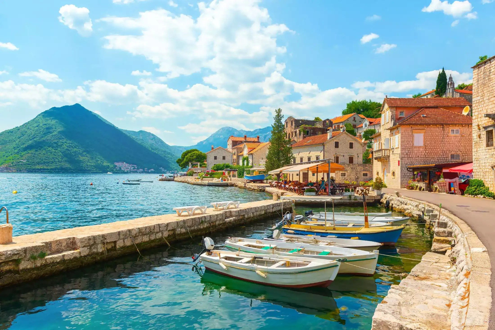

Profile information
Email:
########
Password:
########Welcome to the landmarks of Perast
Stumbled across small town of Perast while your in Kotor? Well you won't regret it after you see what this town has to offer!

Unlock exclusive content by today!
Our Lady of Škrpjelo
Island of St. George
Museum of the city of Perast
The Smekja palace
Our Lady of Škrpjela is the biggest unmissable tourist attraction for every tourist who visits Boka. This is the most important sanctuary of Boka Kotorska. Next to the island of Sveti Đorđe, there is an artificial island, built on a rock that was located in the same place, at the end of the fifteenth century. While the Catholic church is dedicated to Our Lady of Škrpjela, built on this island in 1630. Legend has it that two fishermen found an icon (Virgin Mary and Jesus Christ) on the same rock, which they gave to Perast. More than 100 years later, the people of Perastani built an island on that spot and then a church, which became the home of the found icon. Our Lady of Škrpjela becomes a home for prayers for all sailors from Boka who went on long journeys. July 22nd is celebrated as the birthday of Our Lady of Škrpjela, and then it is possible to attend a more than 500-year-old event called Fašinada. Inside the museum of the church, it is possible to see numerous historical objects, from different eras, which were gifts to the island. Amphorae from the second century B.C., weapons from the 18th and 19th centuries, over 250 pictures of ships and sailing ships that throughout history bore the name Gospa od Škrpjela. There are also over 2,000 silver votive plaques, which are hung on the walls of the church. Votive plaques have been brought to the church since the 17th century, and are a gift from sailors who survived a shipwreck or an accident at sea. As a sign of gratitude to Our Lady who saved their lives, the sailors brought tiles. Of course, no one brings votive plaques to the island anymore, but that's why there are many other objects brought from all over the world, such as car keys, helmets, and there is even a small piece of glass from the JAT plane, which in 1972 crashed over the Czech Republic, when only the flight attendant survived the crash. The vault of the church, the so-called The Marian cycle is the work of the famous baroque painter Trip Kokolje from the 18th century. century. Popularly called the Sistine Chapel of Boke, because it was built according to the same principle as the vault in the Vatican. However, tourists visit the island mostly because of one tapestry, a work from 1828. It is a tapestry made by a Perast woman named Hacinta Kunić, who waited for the sailor to return from the ship for 25 years, waited and embroidered. She used silk, gold and silver as material, and when she ran out of material, she used her own hair. The tapestry is so precisely made that there are about 650 needle stitches on one square centimeter. Whether the sailor returned or not, we will never know, but Jacinta was left blind at the end of her work. Hacinta donated the tapestry to the shrine of Our Lady of Škrpjela.
Saint George is a Catholic church built on a natural island. Popularly called the island of the dead, because there is a large cemetery on the whole island, where only the famous Perastani were once buried. On the island there is a Benedictine monastery from the twelfth century, and a small church dedicated to Saint George. The story of Romeo and Juliet from Pera, two young people who were separated by death and then reunited, is connected to this place. The story begins in 1813, when Boka Kotorska (but not Perast) was under the occupation of Napoleon Bonaparte. Ante Slovic, a young soldier in Napoleon's army was stationed on the island of Sveti Djorđe. In Perast, he met the young Katica and they fell in love very quickly. One day, Ante was ordered to hit Perast with a shell from the island. He fired the first and last grenade and Perast surrendered. Happy that everything ended so quickly, Ante went to the city to kiss his beloved, but he found her dead. She was killed by a grenade Ante used to shoot Perast. After that unfortunate event, Ante left the army and asked Perastani that Katica be buried on the island. Ante became the eternal guardian of her grave. Until the end of his life, he lived there and guarded her grave. The people of Peras called him Fra Frane. Today on the island it is possible to see two monuments next to each other. Katica is written on one and Fra Frane on the other. Cypresses grow on the island, the tallest in Boka. The island has been leased by the diocese of Subotica for the last 50 years and is therefore not open for visits, but if you ask an older local, he will be happy to take you to island and ask the friars who live there to show you the inside for a while.
The Museum of the City of Perast or the Bujović Palace is one of the most beautiful baroque palaces on the Adriatic. Located on the very coast of the sea, at the entrance to Perast, by Risn. Beautiful from the outside as well as from the inside, the Bujović Palace once belonged to the noble family of Peraš and today it is home to the Museum of the city of Perast. The palace was built in 1684 in the Baroque style. It was built by two brothers, Ivan and Vicko Bujović, for their family and friends as well as the parties that were held at that time. The palace is built on two floors with a large balcony. Legend has it that the owner Vicko Bujović pushed the designer Giovanij Fonte off the roof of the palace, after asking him if he could build a more beautiful palace, to which Fonte replied: I can, I'm not here, but I can. Proud Vicko Bujović died in a conspiracy against him by the Zmajević family from Pera. His grave has never been found, and it is assumed that it is on the island of St. Đorđe. The city museum abounds with a rich collection of maritime books from the 18th and 19th centuries, the library of the Visković noble family, noble salons, furniture, portraits, folk costumes, love letters from the Plamići from the 19th century, models of ships, weapons (swords, sabers, scimitars), flags of the city, and it is possible to see the Venetian flag from the 18th century. It is possible to organize a wedding ceremony in the palace (for a fee), as well as a photo shoot on the balcony of the palace. Today, the Bujović family has no living heirs.
The Smekja Palace belonged to the Smekja captain's family. The palace was built in the seventeenth century. The Smekja Palace is located by the sea, in the very center of the city of Perast. It is the most grandiose palace in Boka, built of extremely white stone, which has not been damaged by the ravages of time. The Smekja family was one of the richest noble families, whose members were distinguished professors, admirals and captains. Next to the palace is the family Catholic church of St. Marka, which is open for visits. Today, the palace has been turned into a luxury hotel - a 5-star restaurant, so it is possible to dine with music and wine on the beautiful terrace of the palace. Smekja Palace is located near Marina Perast. It is easy to spot the palace building in Perast. Perast is located near the city of Kotor, it belongs to the Bay of Kotor.
Icons provided by Icons8